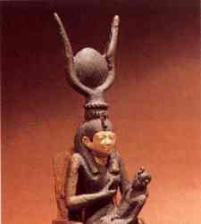
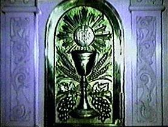
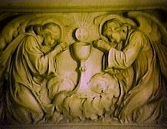
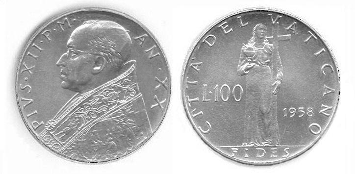
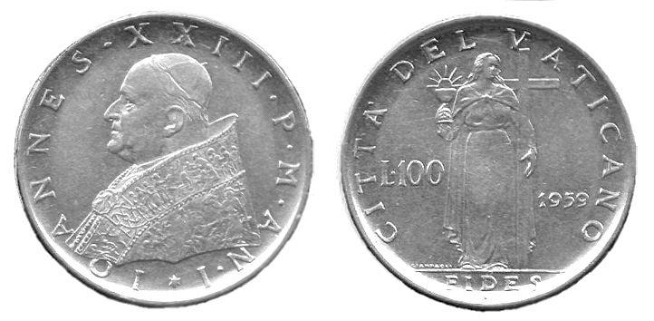
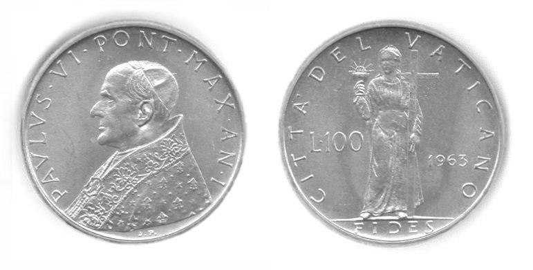

PAGAN SUN WORSHIP AND CATHOLICISM
THE MONSTRANCE and the WAFER GOD
Exo 20:4 Thou shalt not make unto thee any graven
image, or any likeness of any thing that is in heaven above, or that is
in the earth beneath, or that is in the water under the earth:
Exo 20:5 Thou shalt not bow down thyself to them, nor serve them: ...
Acts 19:26 Moreover ye see and hear, that not alone
at Ephesus, but almost throughout all Asia, this Paul hath persuaded
and turned away much people, saying that they be no gods, which are
made with hands:
Note that the commandment of God forbids making and
bowing down to images. Among pagans, perhaps the most common form of
idolatry is sun worship, and the above prohibition would clearly
exclude bowing down before images of the sun or moon (things in the
heaven above). But then God gets even more explicit:
Deu 17:2 If there be found among you, within any of
thy gates which the LORD thy God giveth thee, man or woman, that hath
wrought wickedness in the sight of the LORD thy God, in transgressing
his covenant,
Deu 17:3 And hath gone and served other gods, and worshipped them,
either the sun, or moon, or any of the host of heaven, which I have not
commanded;
Deu 17:4 And it be told thee, and thou hast heard of it, and inquired
diligently, and, behold, it be true, and the thing certain, that such
abomination is wrought in Israel:
Deu 17:5 Then shalt thou bring forth that man or that woman, which have
committed that wicked thing, unto thy gates, even that man or that
woman, and shalt stone them with stones, till they die.
Jer 8:1 At that time, saith the LORD, they shall
bring out the bones of the kings of Judah, and the bones of his
princes, and the bones of the priests, and the bones of the prophets,
and the bones of the inhabitants of Jerusalem, out of their graves:
Jer 8:2 And they shall spread them before the sun, and the moon, and
all the host of heaven, whom they have loved, and whom they have
served, and after whom they have walked, and whom they have sought, and
whom they have worshipped: they shall not be gathered, nor be buried;
they shall be for dung upon the face of the earth.
Jer 8:3 And death shall be chosen rather than life by all the residue
of them that remain of this evil family, which remain in all the places
whither I have driven them, saith the LORD of hosts.
With that in mind, lets look at solar and lunar
images directly associated with the Catholic Mass.
|
Here is Pope John Paul II holding what is called a
Monstrance or Ostensorium. It is used to display a round wafer of
bread, called the host, which is used in what is called the Mass,
Lord's Supper, Communion or Eucharistic meal. The Catholic believes
this wafer of bread turns into the actual body of Christ when
consecrated during the Mass. |
From the "Be Not Afraid"
series of videos, Copyright © 1992,
Apostolate
for Family Consecration |
The Roman Catholic Church even admits the Monstrance to be a
sunburst:
"During the baroque period, it took on a rayed form of a
sun-monstrance with a circular window surrounded by a silver or gold
frame with rays."
Source: The Dictionary of the Liturgy by Rev.
Jovian P. Lang, OFM., published and copyrighted © 1989 by Catholic Book
Publishing Co., New York, ISBN 0-89942-273-X, page 436.
|
Photo of a Monstrance in the
Vatican Museum
From the book "The New Illustrated Great
Controversy"
Copyright © LLT Productions - Used by Permission |
In fact, according to the  1913
edition of the Catholic Encyclopedia-
1913
edition of the Catholic Encyclopedia-
The most appropriate form (for the monstrance) is that of the
sun emitting its rays to all sides (Instructio Clement., 5). [See Altar
Vessels: Ostensorium]
Notice the letters SFS in the small sunburst blaze on the large
close up of a Monstrance above? Each of the letters is a universal
symbol for the number 6 in the pagan mysteries, so to the pagan it
reads 666! The number 666 is also associated with
what is called the "magic square of the sun". The practice of
equating names and letters with numbers is called gematria.
The letter F:
The Hebrew letter Vau (V) has a value of 6. The English letter F
is a descendant of Vau and retains the same value. The letter F is also
the 6th letter of the English alphabet. In pagan numerology the letters
F, O, and X have the value of 6.
The Greek symbol Digamma also looks like the letter F and has a
value of 6.
The letter S:
The Greek equivalent of Vau is the letter Stau, which looks like
an S, and it also has the value of 6.
Sources: The Modern Numerology by John King, published
by Blandford, Copyright © 1996, ISBN 0-7137-2560-5, page 121 / Behind
Numerology, by Shirley Blackwell Lawrence, published by Newcastle
Publishing Co., Inc., Copyright © 1989, ISBN 0-87877-145-X, page 93 /
Jesus Christ Sun of God, by David Fideler, Copyright © 1993,
published by Quest Books of Wheaton Illinois and Madras India, ISBN
0-8356-0696-1, page 27.
And the flaming Sacred Heart located just below the SFS is
actually symbolic of Baal / Tammuz!
(See Consecration to Flaming Sacred Hearts)
| The priest (here the Pope) sometimes holds up the sunburst
monstrance with the host encased for the congregation to adore and
venerate. Virtually any time the monstrance, a pagan sun symbol, is
viewed by the congregation, they kneel in submission. A Catholic cannot
walk past this sun symbol without acknowledging it by kneeling and or
making the sign of the cross with their hands. |
|
|
From the "Be Not Afraid" series
of videos,
Copyright © 1992,
Apostolate
for Family Consecration
|
 |
Remember God's commandment forbidding bowing down to
images? How can the Catholic justify bowing down before a sun image in
veneration? They will tell you that they are paying homage to the host,
bread they believe has actually turned into the actual body and blood
of Jesus after being consecrated by a priest. Since the wafer, they
believe, has been transformed into God Himself, it is the round wafer
god inside the sunburst monstrance that they bow down to in
worship, not the sunburst monstrance. However, the round wafer of bread
itself is also a sun symbol, which is sometimes made
quite obvious in Catholic representations of the host in various forms
of artwork.
|
Above is the huge processional monstrance of the Cathedral
of Toledo, Spain, made of gilded solid silver and solid gold,
being paraded through the streets for public display on the festival of
Corpus Christi. It is said to contain 18 kg (40 pounds) of gold, and
183 kg (400 pounds) of silver, for a total weight nearing 1/4 ton of
precious metals.
The great monstrance of the cathedral of Toledo,
which is more than twelve feet high, and the construction of which
occupied in all more than 100 years, is adorned with 260 statuettes,
one of the largest of which is said to be made of the gold brought by
Columbus from the New World.
Source: Catholic Encyclopedia Online, Ostensorium
(Monstrance).
This is how the eucharistic adoration for World Youth
Day 2011 was described: "The
visual focal point when the pope leads the adoration and Benediction
will be a monstrance
set into a towering 16th-century gothic structure of silver and gold
usually housed in the Toledo cathedral." (NEWS
BRIEFS
Jul-22-2011) At this
event, Benedict XVI led the gathered pilgrims in kneeling down before
the exposed round wafer to adore it as God.
Another very large monstrance has recently been made
for St. Stanislaus Kostka Church in Chicago that stands 9 feet tall. It
depicts the Ark of the Covenant, 2 Cherubim on either side with wings
overspread, and Mary in
place on the Ark's mercy seat! On her chest is the sunburst
symbol that contains a one foot wide wafer host. This is blasphemy and
idolatry, depicting Mary on the throne of God in the Holy of Holies of
the Sanctuary!
The Sanctuary of the
Divine Mercy.
| At right is the general sunburst pattern used to symbolize
the host, the supposed "true body" of Christ. This design has also been
adopted by the Jesuits as their symbol. The IHS is thought by some to
represent the first letters of each word in the Latin phrase Iesus
Hominum Salvator (Jesus Saviour of Men), although according to the
Catholics themselves they actually represent the first three letters of
the name "Jesus" in Greek (spelled in Greek
iota-eta-sigma-omicron-upsilon-sigma). The pagan though, would quickly
see the same sun disk symbol associated with many pagan deities of
Egypt, among them Isis, Horus, and Seb. In Egyptian mythology Seb (Geb)
was the father of the goddess Isis (Aset), the mother and protectress
of her divine son Horus (Harpocrates). Horus (the younger) is
frequently depicted on Egyptian temples as a winged sun disk,
representing the rays of the rising sun. |
 |
|

|
At left is a statuette of the
Egyptian goddess Isis. Her headdress shows the sun disk within the
horns of an Apis bull, symbology which is virtually identical to that
of the sunburst monstrance. Also of note, in Isis lap is her infant
son, Horus. In this one image you have the symbology of the
Catholic monstrance and Mother / child worship which is so
prominent in Catholicism.
The Egyptian pharaoh also claimed to be the
embodiment of Horus on earth, much like the pope claims to be the
infallible Vicar of Christ on earth.
|
|
The British Museum.
|
|
| The Apis bull, as depicted in this Egyptian statuette, is
likely to be the pattern used for the golden calf the Israelites made
at Mount Sinai (Exo. 32), since they were undoubtedly quite familiar
with it as a result of their long captivity in Egypt. Note that in
front of the sun disk and horns, which looks virtually identical to
some Catholic monstrances, there is the serpent poised to strike. In
Scripture the serpent is symbolic of Satan. (Gen 3, Rev. 12:9) |
 |
|
The British Museum.
|
|
|
At left is the reverse side of a medal
commemorating the Catholic Eucharistic Congress held in Chicago in 1926
(On the front there is a bust of Pope Pius XI). Note that the round
wafer host above the golden cup is portrayed as a radiant sunburst.
|
|
UBI PETRUS - IBI ECCLESIA
Where Peter is, there is the Church
|
|
The Worship of Baal is Sun
Worship
Below is an artifact unearthed in the holy of holies of the pagan
temple in the Canaanite city of Hatzor / Hazor, in northern Israel. It
is described as follows:
2 Ki 23:3 And the king [Josiah] stood by a pillar, and made a
covenant before the LORD, to walk after the LORD, and to keep his
commandments and his testimonies and his statutes with all their heart
and all their soul, to perform the words of this covenant that were
written in this book. And all the people stood to the covenant.
2 Ki 23:4 And the king commanded Hilkiah the high priest, and the
priests of the second order, and the keepers of the door, to bring
forth out of the temple of the LORD all the vessels that were made for
Baal, and for the grove, and for all the host of heaven: and he burned
them without Jerusalem in the fields of Kidron, and carried the ashes
of them unto Bethel.
2 Ki 23:5 And he put down the idolatrous priests, whom the kings of
Judah had ordained to burn incense in the high places in the cities of
Judah, and in the places round about Jerusalem; them also that burned
incense unto Baal, to the sun, and to the moon, and to the planets, and
to all the host of heaven.
2 Ki 23:6 And he brought out the grove from the house of the LORD,
without Jerusalem, unto the brook Kidron, and burned it at the brook
Kidron, and stamped it small to powder, and cast the powder thereof
upon the graves of the children of the people.
Baal Worship in Canaan Baal worship
revolved around two themes that represented the conception of Baal his
worshipers held. Baal was both the sun-god and storm-god. He was
worshiped as sun-god when the people wished to express thanks and
gratitude for light and warmth and fertility.
Source: Holman Bible Dictionary, Computer version,
entry on Baal by James Newell.
BAAL AS A DEITY
... in many Chanaanite, Phoenician, or Palmyrene
shrines, the sun was the Baal worshipped, ...
Source: The Catholic
Encyclopedia Online, entry on Baal, Baalim.
|
Catholic Sunburst Eucharist
Host |
| Here the Eucharistic host, as Catholics call it, has
actually been made as a sunburst (note the flames around the edge).
This sun symbol, after consecration, is called the true body of God, to
be adored and bowed down to and worshipped by the laity, especially
when displayed inside a sunburst monstrance.
Note the similarity to the symbol of Baal from Hatzor: a
cross within a circle.
|
|
|
From the video "This is my
Body, This is my Blood,
Miracles of the Holy Eucharist" by Bob and Penny Lord
Copyright © 1988. |
|

|
|
At left is a pagan Canaanite cultic
pillar or "matstsebah", also found in excavations of the city of
Hatzor, showing hands raised in praise to the sun disk, portrayed
within the crescent moon.
Deu 16:22 Neither shalt thou set thee up any image
(matstsebah); which the LORD thy God hateth.
On the cover of the Jan/Feb 2000 edition of
Envoy Magazine, a
Catholic publication, an elevated consecrated host of the Eucharist is
unmistakably depicted as a bright yellow sun disk against the
background of a cloudy blue sky!
|
|
Above photo by Richard Lannoy
|
|
|
|
At left is pope John Paul II celebrating Mass,
elevating a large host for adoration. Note the similarity with the
pagan Canaanite pillar! |
|
Image from the "Be Not Afraid"
series of videos, Copyright © 1993,
Apostolate for Family Consecration,
P.O. Box 151, Bloomingdale Ohio, 43910.
|
|
Do you think this is what Jesus had in mind at the Last Supper?
No, when He "broke bread" He handed His disciples a torn fragment
of unleavened bread, that symbolized His sinless broken body on the
cross, but this is NOT what is conveyed with a pressed, round, intact
and unbroken wafer that has been so commonly used.
Now, a Catholic might respond: the manna that fell from heaven
was ROUND:
Exo 16:14 And when the dew that lay was gone up, behold, upon
the face of the wilderness there lay a small round thing, as small as
the hoar frost on the ground.
Voila! The round disk-like wafer host of the Mass is a copy of
God's manna!
No. Not, so fast. Note that scripture give us a description of
manna in size, shape, color and taste:
Exo 16:14 And when the layer of dew lifted, there, on the
surface of the wilderness, was a small round substance, as fine as
frost on the ground. [NKJV]
Exo 16:31 And the house of Israel called the name thereof Manna:
and it was like coriander seed [in size and shape], white [color]; and
the taste of it was like wafers made with honey. [KJV]
Num 11:7 And the manna was as coriander seed [in size and
shape], and the colour thereof as the colour of bdellium [white].
Num 11:8 And the people went about, and gathered it, and ground it in
mills, or beat it in a mortar, and baked it in pans, and made cakes of
it: and the taste of it was as the taste of fresh oil. [KJV]
Psa 78:24 he rained down manna for the people to eat, he gave
them the grain of heaven. [NIV]
Psa 78:24 And had rained down manna upon them to eat, and had given
them of the corn of heaven. [KJV]
The size and shape of manna
Exodus 16:14 tells us manna was small, small like the frost on the
ground. We are also told in Exodus and Numbers that manna was like
Coriander seed. Coriander is common today, and is used in brewing beer.
It is round like a ball, and quite small. Eight to ten
Coriander seeds might fit in the space of a pea. A picture of one ounce
(hundreds) of Coriander
Seeds. So Coriander is a miniscule round seed.
In Psalm 78 manna is further described as the grain or corn
of heaven. In Strong's the word in Psalm 78 is:
H1715. dagan, daw-gawn'; from H1711; prop. increase, i.e.
grain:--corn ([floor]), wheat.
Manna, therefore, was small and round like a ball, similar to a
small seed grain.
The color of manna
The meaning of bdellium is somewhat uncertain, however, similar
words in other languages favor identification with a resinous gum. In
droplet form, the gum may have the appearance of a pearl, white. Exodus
16:31 confirms that manna was white in color by plainly stating it.
The taste of manna
Exo 16:31 ... the taste of it was like wafers made with honey.
Num 11:8 ... the taste of it was as the taste of fresh oil.
As described in the Bible, manna resembled Coriander in size and
shape: it was like a grain, like a small white round ball-like seed
which was collected, ground up, and baked to make cakes, like wheat is
ground to make bread. So, no, the Catholic wafer host does not
imitate manna in either size or shape.
Here is Catholic Web page advocating that churches begin a program
of perpetual 24 hour adoration (worship), of
the wafer host:
Apostolate
for Perpetual Adoration.
You might call this the perpetual worshipping of "God in (of ?)
the Sunburst Monstrance".
|
Here are additional pictures of monstrances online-
Museum
of Monte Cassino, Italy.
The
Eucharistic Miracle of Lanciano.
The last item is quite extraordinary. In the 8th century, it
is alleged that the host and wine turned into actual living flesh and
blood during a Mass, which it is said, remain well preserved in a
monstrance in Italy to this day.
|
|
On the right is a photo of a stele from Ur of
the Chaldees, with the symbol of the Babylonian sun god Shamash within
the crescent of the moon goddess Nanna.
|
|
|
Stele of
Ur-Nammu, detail
|
| At right is a close-up of a monstrance, and inside the
glass enclosure is a crescent, upon which the round wafer god host is
placed, a virtual duplication of the symbology of the Canaanite and
Chaldean stele shown above. Many monstrances use this crescent, which
is officially called a "lunette" or "luna" (moon), to hold the round
wafer host. The sun disk in the crescent moon is a quite common symbol
for pagan religions, to include Babylon, Syria, and India. |
|
|
From the video "666 and the
Mark" by James Arrabito,
Copyright ©
LLT
Productions - Used by Permission
|
Worshipping the Eucharist as God
|  |
 |
|
Images from the video "666 and
the Mark" by James Arrabito,
Copyright © LLT
Productions - Used by Permission
|
Above on the left you see the pagan sunburst wafer god, inscribed
with IHS and the cross, is portrayed above the cup of wine. This is the
door to a place where the wine and wafers are stored. Above on the
right, you see a similar carving depicting angels kneeling in
idolatrous adoration or worship of the wafer god and wine.
In case you think the word "worship" is an exaggeration on my
part, please note this paragraph from the new Vatican Catechism of the
Catholic Church: (Italics present in the original text)
1378 Worship of the Eucharist. In the liturgy of
the Mass we express our faith in the real presence of Christ under the
species of bread and wine by, among other ways, genuflecting or bowing
deeply as a sign of adoration of the Lord. "The Catholic church has
always offered and still offers to the sacrament of the Eucharist the
cult of adoration, not only during Mass, but also outside of it,
reserving the consecrated host with the utmost care, exposing them to
the solemn veneration of the faithful, and carrying them in procession."
Source: Catechism of the Catholic Church, published by
Ligouri Publications, English translation © 1994 by the United States
Catholic Conference, Inc.--Libreria Editrice Vaticana, bearing the
Imprimi Potest of Joseph Cardinal Ratzinger, page 347.
And note this decree concerning the Most Holy Sacrament of the
Eucharist from the thirteenth session of the Council of Trent, October
11th, 1551:
Chapter V
THE WORSHIP AND VENERATION TO BE SHOWN TO
THIS MOST HOLY SACRAMENT
There is, therefore, no room for doubt that all the faithful of
Christ may, in accordance with a custom always received in the Catholic
Church, give to this most holy sacrament in veneration the worship of latria,
which is due to the true God.
Source: The Canons and Decrees of the Council of Trent,
Translated and introduced by Rev. H. J. Schroeder, O.P., Published
by Tan Books and Publishers, INC.,
Rockford Illinois, 61105, © 1978, ISBN: 0-89555-074-1, page 76.
Here is the Thirteenth
Session of Trent online. See Chapter V.
Dominicae
Cenae - On the Mystery and Worship of the Eucharist,
promulgated by John Paul II On February 24, 1980 To All the Bishops of
the Church.
Conclusion
So the Catholic Church describes itself in its documents as
engaged in the act of worshipping the Eucharist, which
is also called adoration or veneration. Isn't it amazing how the
Catholic Church justifies bowing down before images of the sun, as
depicted by the monstrance and a round wafer, by claiming the bread has
actually become God! God's commandment is cleverly made of no
effect by the Traditions of men, by mixing error and truth.
Note these 100 Lire coins issued by the Vatican for nearly 10
years. (Click on a coin for a closer look.)

Pope Pius the 12th - 1958 |

Pope John the 23rd - 1959 |
| CITTÁ DEL VATICANO - CITY OF
PROPHECY |

Pope Paul the 6th - 1963 |
Incredibly enough, the woman representing faith (the Catholic
Church) on the reverse side of the coins holds up a cup in her right
hand, in which you see pagan sunburst wafer god, which recalls these
verses in Revelation:
Rev 17:4 And the woman was arrayed in purple and scarlet colour,
and decked with gold and precious stones and pearls, having a golden
cup in her hand full of abominations and filthiness of her fornication:
Rev 18:3 For all nations have drunk of the wine of the wrath of
her fornication, and the kings of the earth have committed fornication
with her, and the merchants of the earth are waxed rich through the
abundance of her delicacies.

The cup of wine of the apostate woman (church) represents
spiritual and doctrinal fornication, a mixing of truth and error,
Christianity and paganism, which she has taught to the world (made the
nations drink).
Rev 17:5 And upon her forehead was a name written, MYSTERY,
BABYLON THE GREAT, THE MOTHER OF HARLOTS AND ABOMINATIONS OF THE EARTH.
There is only one self-proclaimed "Mother" church, The Universal
(Catholic) Church.
Rev 18:4 And I heard another voice from heaven, saying, Come out
of her, my people, that ye be not partakers of her sins, and that ye
receive not of her plagues.
Rev 18:5 For her sins have reached unto heaven, and God hath remembered
her iniquities.
See also:
The Sun Wheel, the Obelisk and
Baal.
The Sunburst Image, the Queen
of Heaven and Baal.
The Catholic Mass.


{kind=link}
{kind=link}
{kind=link}